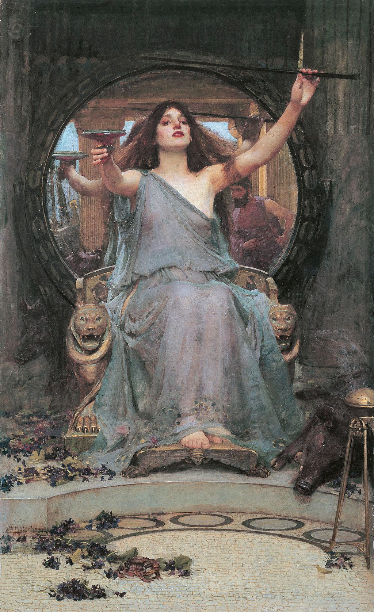

<head>
<meta charset="UTF-8" />
<meta name="keywords" content="drawing, painting" />
<meta name="description" content="drawings by Sunjy" />
<title>Sunjy</title>
<link rel="shortcut icon" type="image/x-icon" href="../../mImages/mCommon/favicon.ico" media="screen" />
<link rel="stylesheet" type="text/css" href="../../mCsses/mCommon/mCssA.css" />
<link rel="stylesheet" type="text/css" href="../../mCsses/mCommon/mCssB.css" />
<link rel="stylesheet" type="text/css" href="../../mCsses/mCommon/mCssC.css" />
<link rel="stylesheet" type="text/css" href="../../mCsses/mCommon/mCssD.css" />
<link rel="stylesheet" type="text/css" href="../../mCsses/mContent/mCssA.css" />
<link rel="stylesheet" type="text/css" href="../../mCsses/mContent/mCssB.css" />
<link rel="stylesheet" type="text/css" href="../../mCsses/mContent/mCssC.css" />
<link rel="stylesheet" type="text/css" href="../../mCsses/mContent/mCssD.css" />
</head>
<script type="text/javascript" src="../../mScripts/mContent/mContentAA.js" /></script>
<script type="text/javascript" src="../../mScripts/mContent/mContentAB.js" /></script>
<script type="text/javascript" src="../../mScripts/mContent/mContentAC.js" /></script>
<script type="text/javascript" src="../../mScripts/mContent/mContentAD.js" /></script>
<script type="text/javascript"></script> 
<script type="text/javascript">
document.write('<div class="mImgAbsolute"></div>');
/*
document.write('<p class="mFontSizeBColor" />From a white paper...</p>');
document.write('<table class="center"><tr><td>');
document.write('');
document.write('</td></tr></table>');
*/
</script>


<script type="text/javascript">
document.write('<p class="mFontSizeBColor" />Circe Offering the Cup to Ulysses</p>');
document.write('<p class="mFontSizeSColor" />“Circe Offering the Cup to Ulysses” by John William Waterhouse depicts a scene from Homer’s Odyssey. The painting shows the beautiful sorceress Circe offering Odysseus (called Ulysses by the Romans) a cup containing a magic potion.<br><br>Circe is shown with a  cup in one hand and a wand in the other. She is surrounded by purple flowers, the color of royalty, as she believes herself to be a queen. She sits on a golden throne, with roaring lions depicted on each arm.<br><br>Odysseus’s reflection can be seen in the mirror behind Circe’s throne. She is attempting to bring Ulysses under her spell as she already has done with his crew.<br><br>Odysseus’ crewmen have been magically transformed into pigs, as can be seen beside Circe’s feet and in the mirror reflection on the left below the representation of their boat.<br><br>In Homer’s Odyssey, an 8th-century BC sequel to his Trojan War epic Iliad, Circe is initially described as a beautiful enchantress living in a palace isolated amid a dense wood on her island.<br><br>She invites Odysseus’ crew to a feast, which was mixed with one of her magical potions that turns them into swine. Only one crew member, who suspected treachery, did not go in. He escaped warning Odysseus and the others who have remained with the ship.<br><br>Before Odysseus reaches Circe’s palace to attempt to rescue his crew, Hermes, the messenger god who was sent by Athena, intercepts him and reveals how he might defeat Circe to free his crew from their enchantment.<br><br>Hermes provides Odysseus with the herb to protect him from Circe’s magic. He also tells Odysseus that he must then draw his sword and act as if he were going to attack her. Odysseus’s reflection in the mirror shows him holding the hilt of his sword, fists clenched, ready to attack.<br><br>Hermes foretold that Circe would ask Odysseus to bed, but Hermes advises caution, from the treacherous goddess.<br><br>Odysseus had to first secure a promise by the names of the gods that she will not take any further action against him. Odysseus successfully followed the advice and also freed his men. After further adventures, Odysseus finally escaped Circe’s island.<br><br>Circe<br><br>Circe is a goddess of magic or sorceress in Greek mythology. Circe was renowned for her vast knowledge of potions and herbs.<br><br>One of her Homeric epithets is “polypharmakos,” which is Greek for “knowing many drugs or charms.” Through the use of these potions, she would transform her enemies or those who offended her, into animals. Animals portrayed in the painting depicting other mortals who fell into Circe’s spell, including a toad and some rodent in the foreground.<br><br>In Homer’s Odyssey, when Odysseus visits her island of Aeaea on the way back from the Trojan War, she changes most of his crew into swine.<br><br>In another story, Circe falls in love with the sea-god Glaucus, who prefers the nymph Scylla to her. In revenge, Circe poisoned the water, where her rival bathed and turned her into a dreadful monster. This story was also painted by Waterhouse in “Circe Invidiosa.”<br><br>Odysseus<br><br>Odysseus, also known by the Latin variant Ulysses, was a legendary Greek king of Ithaca and the hero of Homer’s epic poem the Odyssey.<br><br>Odysseus is renowned for his intellectual brilliance, guile, and versatility. He is most famous for his homecoming journey, which took him ten eventful years after the decade-long Trojan War.<br></p>');
document.write('<table class="center" /><tr><td>');
document.write('<br>Circe is shown with a  cup in one hand and a wand in the other. She is surrounded by purple flowers, the color of royalty, as she believes herself to be a queen. She sits on a golden throne, with roaring lions depicted on each arm.<br><br>Odysseus’s reflection can be seen in the mirror behind Circe’s throne. She is attempting to bring Ulysses under her spell as she already has done with his crew.<br><br>Odysseus’ crewmen have been magically transformed into pigs, as can be seen beside Circe’s feet and in the mirror reflection on the left below the representation of their boat.<br><br>In Homer’s Odyssey, an 8th-century BC sequel to his Trojan War epic Iliad, Circe is initially described as a beautiful enchantress living in a palace isolated amid a dense wood on her island.<br><br>She invites Odysseus’ crew to a feast, which was mixed with one of her magical potions that turns them into swine. Only one crew member, who suspected treachery, did not go in. He escaped warning Odysseus and the others who have remained with the ship.<br><br>Before Odysseus reaches Circe’s palace to attempt to rescue his crew, Hermes, the messenger god who was sent by Athena, intercepts him and reveals how he might defeat Circe to free his crew from their enchantment.<br><br>Hermes provides Odysseus with the herb to protect him from Circe’s magic. He also tells Odysseus that he must then draw his sword and act as if he were going to attack her. Odysseus’s reflection in the mirror shows him holding the hilt of his sword, fists clenched, ready to attack.<br><br>Hermes foretold that Circe would ask Odysseus to bed, but Hermes advises caution, from the treacherous goddess.<br><br>Odysseus had to first secure a promise by the names of the gods that she will not take any further action against him. Odysseus successfully followed the advice and also freed his men. After further adventures, Odysseus finally escaped Circe’s island.<br><br>Circe<br><br>Circe is a goddess of magic or sorceress in Greek mythology. Circe was renowned for her vast knowledge of potions and herbs.<br><br>One of her Homeric epithets is “polypharmakos,” which is Greek for “knowing many drugs or charms.” Through the use of these potions, she would transform her enemies or those who offended her, into animals. Animals portrayed in the painting depicting other mortals who fell into Circe’s spell, including a toad and some rodent in the foreground.<br><br>In Homer’s Odyssey, when Odysseus visits her island of Aeaea on the way back from the Trojan War, she changes most of his crew into swine.<br><br>In another story, Circe falls in love with the sea-god Glaucus, who prefers the nymph Scylla to her. In revenge, Circe poisoned the water, where her rival bathed and turned her into a dreadful monster. This story was also painted by Waterhouse in “Circe Invidiosa.”<br><br>Odysseus<br><br>Odysseus, also known by the Latin variant Ulysses, was a legendary Greek king of Ithaca and the hero of Homer’s epic poem the Odyssey.<br><br>Odysseus is renowned for his intellectual brilliance, guile, and versatility. He is most famous for his homecoming journey, which took him ten eventful years after the decade-long Trojan War.<br>" />');
document.write('</td></tr></table>');
</script>


